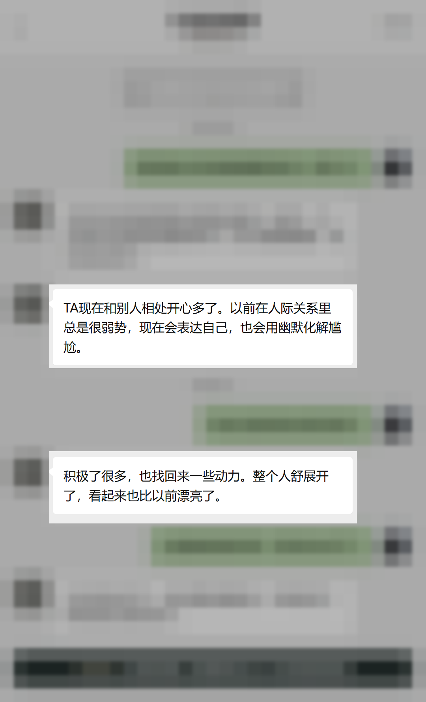

CASE 005 · 青少年成长
家里什么都不缺，孩子为什么还是越来越害怕？
有些孩子不是不懂事，也不是能力差。他只是长期在关系里退缩、害怕和自我怀疑，身心已经没有力量继续向前。
01 / 你是否也看见这些信号
孩子越退缩，
父母越容易着急。
- 害怕社交，面对陌生人或群体时总想躲开
- 不敢表达需要，在关系里习惯退让和讨好
- 对学习与生活失去动力，越来越不相信自己
- 父母越催越担心，孩子反而把自己关得更紧
02 / 渡月如何理解这类问题
先恢复安全感，
再把表达与行动练回来。
我不会先要求孩子立刻变得外向、听话或优秀。我会先理解他为什么害怕，再帮助家庭调整关系，让孩子慢慢长出表达自己、进入关系和面对生活的力量。
- 看见退缩背后的身心状态
- 重建孩子与父母之间的安全关系
- 把变化落实到表达、人际与生活动力

03 / 更多细节不公开
能让你判断“她是否懂我”就够了。
咨询并不是可供围观的故事。具体经历、家庭关系、身体状况与完整对话不会在网站展示。
START FROM THE REAL PROBLEM